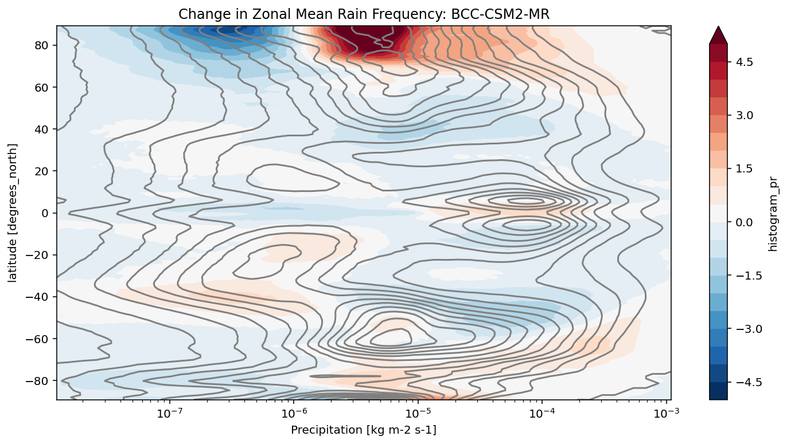
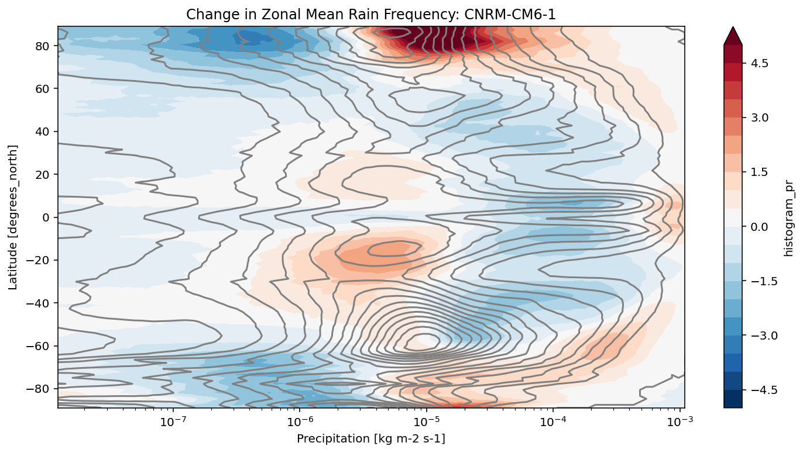
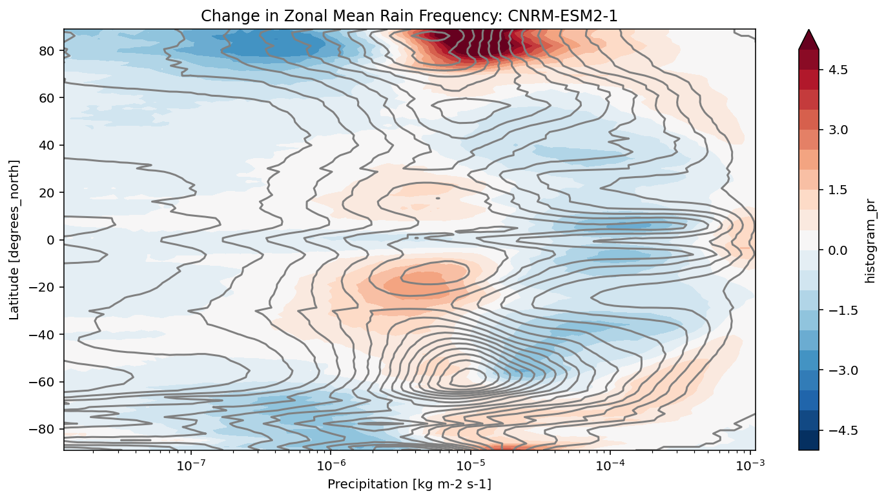
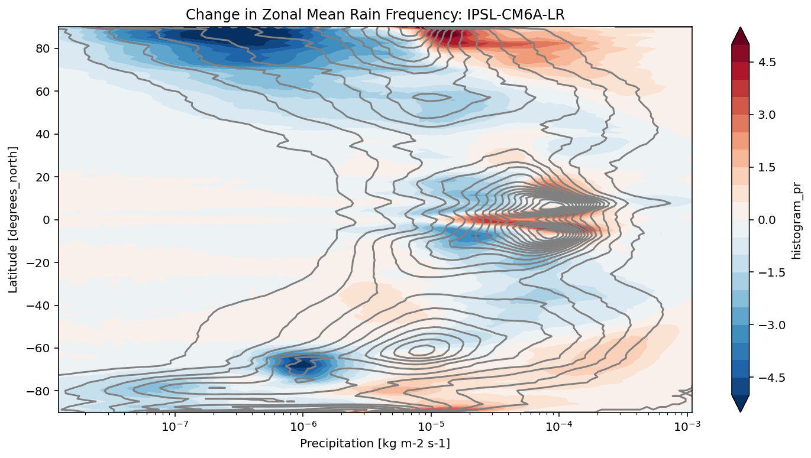

CMIP6 Precipitation Frequency Analysis¶
This notebook shows an advanced analysis case. The calculation was inspired by Angie Pendergrass’s work on precipitation statistics, as described in the following websites / papers:
https://journals.ametsoc.org/doi/full/10.1175/JCLI-D-16-0684.1
https://climatedataguide.ucar.edu/climate-data/gpcp-daily-global-precipitation-climatology-project
We use xhistogram to calculate the distribution of precipitation intensity and its changes in a warming climate.
[1]:
import os
from matplotlib import pyplot as plt
import numpy as np
import pandas as pd
import xarray as xr
import fsspec
from tqdm.autonotebook import tqdm
from xhistogram.xarray import histogram
%matplotlib inline
plt.rcParams['figure.figsize'] = 12, 6
%config InlineBackend.figure_format = 'retina'
/srv/conda/envs/notebook/lib/python3.7/site-packages/ipykernel_launcher.py:8: TqdmExperimentalWarning: Using `tqdm.autonotebook.tqdm` in notebook mode. Use `tqdm.tqdm` instead to force console mode (e.g. in jupyter console)
Compute Cluster¶
Here we use a dask cluster to parallelize our analysis. The cluster scales up and down adaptively.
[2]:
from dask_gateway import Gateway
from dask.distributed import Client
gateway = Gateway()
cluster = gateway.new_cluster()
cluster.adapt(minimum=1, maximum=20)
client = Client(cluster)
cluster
Load Data Catalog¶
[3]:
df = pd.read_csv('https://storage.googleapis.com/cmip6/cmip6-zarr-consolidated-stores.csv')
df.head()
/srv/conda/envs/notebook/lib/python3.7/site-packages/IPython/core/interactiveshell.py:3146: DtypeWarning: Columns (10) have mixed types.Specify dtype option on import or set low_memory=False.
interactivity=interactivity, compiler=compiler, result=result)
[3]:
| activity_id | institution_id | source_id | experiment_id | member_id | table_id | variable_id | grid_label | zstore | dcpp_init_year | version | |
|---|---|---|---|---|---|---|---|---|---|---|---|
| 0 | AerChemMIP | AS-RCEC | TaiESM1 | histSST | r1i1p1f1 | AERmon | od550aer | gn | gs://cmip6/AerChemMIP/AS-RCEC/TaiESM1/histSST/... | NaN | 20200310 |
| 1 | AerChemMIP | BCC | BCC-ESM1 | histSST | r1i1p1f1 | AERmon | mmrbc | gn | gs://cmip6/AerChemMIP/BCC/BCC-ESM1/histSST/r1i... | NaN | 20190718 |
| 2 | AerChemMIP | BCC | BCC-ESM1 | histSST | r1i1p1f1 | AERmon | mmrdust | gn | gs://cmip6/AerChemMIP/BCC/BCC-ESM1/histSST/r1i... | NaN | 20191127 |
| 3 | AerChemMIP | BCC | BCC-ESM1 | histSST | r1i1p1f1 | AERmon | mmroa | gn | gs://cmip6/AerChemMIP/BCC/BCC-ESM1/histSST/r1i... | NaN | 20190809 |
| 4 | AerChemMIP | BCC | BCC-ESM1 | histSST | r1i1p1f1 | AERmon | mmrso4 | gn | gs://cmip6/AerChemMIP/BCC/BCC-ESM1/histSST/r1i... | NaN | 20191127 |
[4]:
df_3hr_pr = df[(df.table_id == '3hr') & (df.variable_id == 'pr')]
len(df_3hr_pr)
[4]:
60
[5]:
run_counts = df_3hr_pr.groupby(['source_id', 'experiment_id'])['zstore'].count()
run_counts
[5]:
source_id experiment_id
BCC-CSM2-MR historical 1
ssp126 1
ssp245 1
ssp370 1
ssp585 1
CNRM-CM6-1 highresSST-present 1
historical 3
ssp126 1
ssp245 1
ssp370 1
ssp585 1
CNRM-CM6-1-HR highresSST-present 1
CNRM-ESM2-1 historical 1
ssp126 1
ssp245 1
ssp370 1
ssp585 1
GFDL-CM4C192 highresSST-present 1
GISS-E2-1-G historical 2
HadGEM3-GC31-HM highresSST-present 1
HadGEM3-GC31-LM highresSST-present 1
HadGEM3-GC31-MM highresSST-present 1
IPSL-CM6A-ATM-HR highresSST-present 1
IPSL-CM6A-LR highresSST-present 1
historical 15
piControl 1
ssp126 3
ssp245 2
ssp370 10
ssp585 1
MRI-ESM2-0 historical 1
Name: zstore, dtype: int64
[6]:
source_ids = []
experiment_ids = ['historical', 'ssp585']
for name, group in df_3hr_pr.groupby('source_id'):
if all([expt in group.experiment_id.values
for expt in experiment_ids]):
source_ids.append(name)
source_ids
[6]:
['BCC-CSM2-MR', 'CNRM-CM6-1', 'CNRM-ESM2-1', 'IPSL-CM6A-LR']
[7]:
def load_pr_data(source_id, expt_id):
"""
Load 3hr precip data for given source and expt ids
"""
uri = df_3hr_pr[(df_3hr_pr.source_id == source_id) &
(df_3hr_pr.experiment_id == expt_id)].zstore.values[0]
ds = xr.open_zarr(fsspec.get_mapper(uri), consolidated=True)
return ds
[8]:
def precip_hist(ds, nbins=100, pr_log_min=-3, pr_log_max=2):
"""
Calculate precipitation histogram for a single model.
Lazy.
"""
assert ds.pr.units == 'kg m-2 s-1'
# mm/day
bins_mm_day = np.hstack([[0], np.logspace(pr_log_min, pr_log_max, nbins)])
bins_kg_m2s = bins_mm_day / (24*60*60)
pr_hist = histogram(ds.pr, bins=[bins_kg_m2s], dim=['lon']).mean(dim='time')
log_bin_spacing = np.diff(np.log(bins_kg_m2s[1:3])).item()
pr_hist_norm = 100 * pr_hist / ds.dims['lon'] / log_bin_spacing
pr_hist_norm.attrs.update({'long_name': 'zonal mean rain frequency',
'units': '%/Δln(r)'})
return pr_hist_norm
def precip_hist_for_expts(dsets, experiment_ids):
"""
Calculate histogram for a suite of experiments.
Eager.
"""
# actual data loading and computations happen in this next line
pr_hists = [precip_hist(ds).load()
for ds in [ds_hist, ds_ssp]]
pr_hist = xr.concat(pr_hists, dim=xr.Variable('experiment_id', experiment_ids))
return pr_hist
[9]:
results = {}
for source_id in tqdm(source_ids):
# get a 20 year period
ds_hist = load_pr_data(source_id, 'historical').sel(time=slice('1980', '2000'))
ds_ssp = load_pr_data(source_id, 'ssp585').sel(time=slice('2080', '2100'))
pr_hist = precip_hist_for_expts([ds_hist, ds_ssp], experiment_ids)
results[source_id] = pr_hist
[10]:
def plot_precip_changes(pr_hist, vmax=5):
"""
Visualize the output
"""
pr_hist_diff = (pr_hist.sel(experiment_id='ssp585') -
pr_hist.sel(experiment_id='historical'))
pr_hist.sel(experiment_id='historical')[:, 1:].plot.contour(xscale='log', colors='0.5', levels=21)
pr_hist_diff[:, 1:].plot.contourf(xscale='log', vmax=vmax, levels=21)
[11]:
title = 'Change in Zonal Mean Rain Frequency'
for source_id, pr_hist in results.items():
plt.figure()
plot_precip_changes(pr_hist)
plt.title(f'{title}: {source_id}')




[ ]: